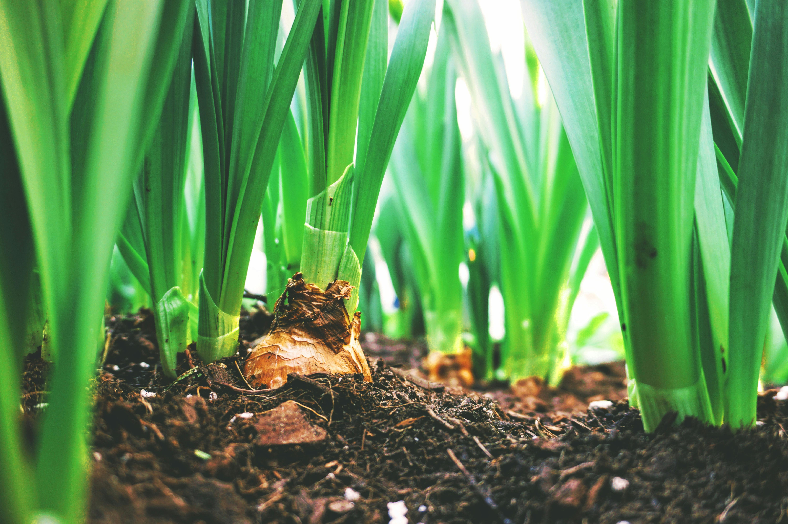

Organic Farming – Introduction
Organic farming is a method of crop and livestock production that involves much more than choosing not to use pesticides, fertilizers, genetically modified organisms, antibiotics, and growth hormones. It is a holistic system designed to optimize the productivity and fitness of diverse communities within the agroecosystem, including soil organisms, plants, livestock, and people. The primary goal is to grow food using natural processes and without synthetic chemicals, fostering ecological balance and biodiversity.

Marketing – Benefits of Chemical-Free Food
The marketing of organic produce heavily emphasizes the health and environmental benefits of chemical-free food. Consumers are increasingly aware of the potential risks associated with synthetic pesticides and herbicides, leading to a growing demand for organic options. Marketing efforts highlight the purity of the food, the sustainable practices used, and the contribution to a healthier planet, appealing to conscious consumers willing to pay a premium for quality and safety.

Economics – Costs, Labor, and Yield
Economically, organic farming presents a unique balance. While initial yields might sometimes be lower compared to conventional intensive farming, the reduced input costs from eliminating synthetic fertilizers and pesticides can significantly improve profit margins. Labor costs can be higher due to more intensive manual weed control and natural pest management techniques. However, the premium prices fetched by organic products in the market often offset these factors, making it a viable and often profitable agricultural model.

Nutrition and Disease Management
Organic farming employs various natural strategies for nutrition and disease management. Crop rotation is crucial, preventing the buildup of pests and diseases associated with a single crop and improving soil fertility. Cover cropping enriches the soil with organic matter, suppresses weeds, and prevents erosion. Composting provides essential nutrients and beneficial microorganisms, enhancing soil health and plant resilience without the need for synthetic additives, leading to stronger, healthier plants.
Key Benefits of Organic Farming
- Healthier Food: Reduced exposure to pesticide residues.
- Environmental Protection: Preserves biodiversity and soil health.
- Increased Income: Premium prices for organic products.
- Employment Generation: Often more labor-intensive.
- Water Quality: Prevents chemical runoff into water sources.
- Cost Savings: Reduced expenditure on synthetic inputs.
- No Synthetic Chemicals: Safer for farmers and consumers.
Future Outlook – Growing Demand & Technology
The future of organic farming looks promising with a rapidly growing global demand for organic products. Governments worldwide are increasingly supporting organic agriculture through subsidies and favorable policies. Technological advancements, including AI for optimized resource management, blockchain for supply chain transparency, and precision agriculture techniques adapted for organic methods, are set to further enhance efficiency and sustainability, ensuring a robust future for chemical-free food production.